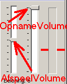
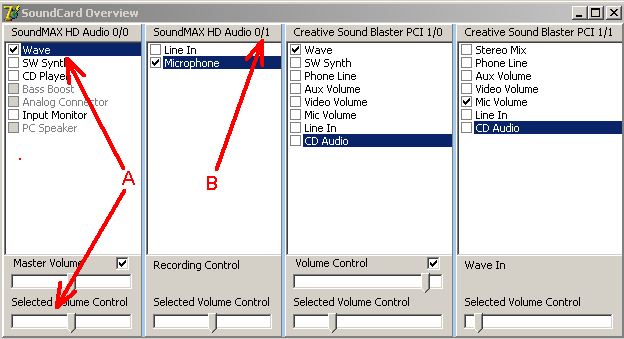
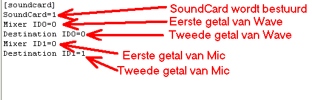
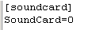

maart 2008
SoundCard Instellingen
Het instellen van de soundcard gebeurt in het algemeen geheel automatisch. Echter in sommige gevallen loopt dit fout en moet éénmalig handmatig de soundcard worden ingesteld.
Windows Vista
De ondersteuning van de soundcard in Windows Vista is dermate slecht (en afhankelijk welke updates wel of niet zijn uitgevoerd), dat voorlopig is besloten om heen ondersteuning binnen het programma van de volume regelaars te implementeren. Onder Vista moet daarom éénmalig een handmatige instelling worden verricht buiten het programma om, die vervolgens gebruikt zal worden.
Afspelen van geluiden
Opnemen van geluiden
Automatische Detectie
Het wordt geadviseerd om eerst deze instellings methode te proberen.

Handmatig aanwijzen van de soundcard
Als de automatische instelling niet is gelukt.
Start dan het programma "Sound_Check.exe". Dit programma geeft een overzicht van alle automatisch te detecteren geluidskaarten. Het beeld kan er als volgt uitzien (meestal is de situatie eenvoudiger):

Nu moet allereerst de soundcard gevonden worden, die wordt gebruikt voor het afspelen van de geluiden. Dit is altijd een signaal met de naam "WAVE", echter zoals hierboven ook getoond, er kunnen meerdere kanalen zijn met de naam Wave. Speel in het programma spraak een geluid af en zoek die regelaar waarbij het volume met de bijbehorende volume regelaar ook daadwerkelijk geregeld kan worden.
Noteer de 2 getallen die in de titelbalk van de betreffende volumeregelaar staan, in het plaatje hierboven is dat dus voor de wave volume regelaar A: "0/0".
Vervolgens moet de juiste microfoon ingang worden opgespoord. Bekijk in Spraak welke volumeregelaar invloed heeft op het opname volume, dit zal in altijd in ingang genaamd "microfoon" zijn, zoniet dan is de verkeerde soundcard driver geïnstalleerd. En noteer wederom de twee getallen in de titelbalk.
Nu moet het bestand "spraak.ini" worden aangepast:

Soundcard niet besturen vanuit TestOrganizer
Pas het betsandje "spraak.ini" als volgt aan:
